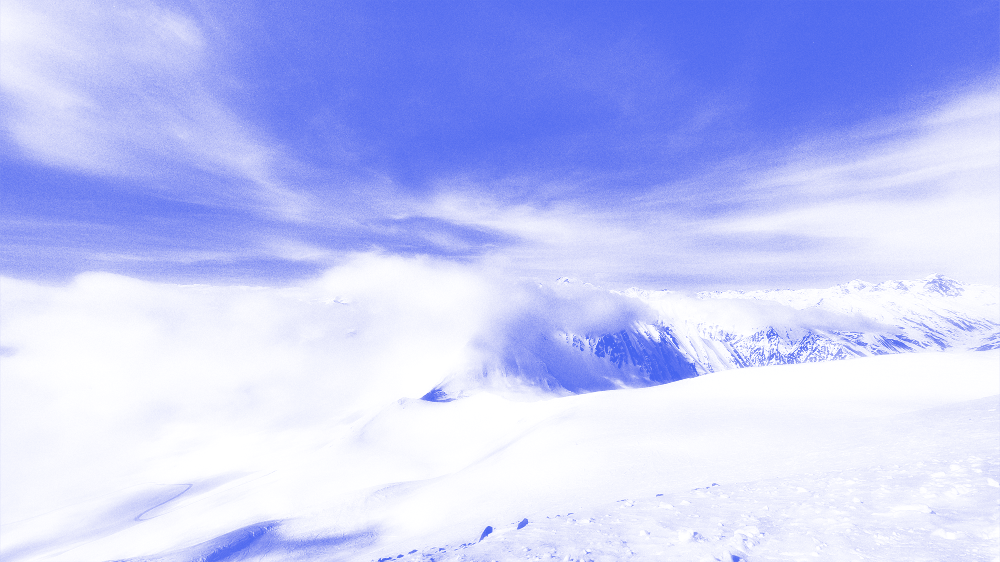

Выживешь ли ты под лавиной?
30.03.2023 11:10
В путешествии



Лавина — это быстрое движение снега, льда и грунта по склону горы или другого крутого склона. Они могут быть очень опасными и даже смертельными для людей, которые находятся в зоне ее воздействия. Лавины обычно происходят из-за вибраций, крутого склона, недостаточной прочности снежного покрова, сильного ветра и других факторов.
Лучше перестраховаться

Криком можно обрушить лавину, но не напугать гору.

Что делать при лавине?
1. Постарайтесь убежать с ее траектории, если вы еще не попали внутрь лавины. Если у вас нет возможности убежать, то нужно попытаться занять место на выступе или защищенном от лавин месте.
2. Если вы уже находитесь внутри лавины, то попытайтесь плавно выползти на поверхность, двигая руками и ногами, чтобы сохранить воздушный карман вокруг себя.
3. Как только вы остановились, попытайтесь освободиться от снега и льда вокруг вас, чтобы сделать дыхание легче.
4. Если вы находитесь в группе, попытайтесь помочь другим выйти на поверхность. Используйте зонды, чтобы найти других пострадавших, а также приемник сигналов лавинных локаторов, чтобы быстро определить их местоположение.
5. Если вы остались один, попытайтесь создать вокруг себя воздушный карман и не двигаться, чтобы не сбиться с пути поисковиков.
Помните, что самая лучшая защита от лавин — это предотвращение, поэтому всегда изучайте прогноз погоды и снежных условий перед выходом в горы, следуйте правилам безопасности и используйте специальное снаряжение для лавинной защиты.
Однажды группа дворников отправилась на лыжный курорт, чтобы покататься на лыжах. Во время спуска один из них задумался и спросил у своего друга: «А что будет, если нас захлестнет лавина?». На что его друг ответил: «Не переживай, у нас с собой есть лопата!».
Вам также пригодится:

Земля уходит из-под ног

10 самых badass змей

А у нас в квартире газ!

Слишком много воды